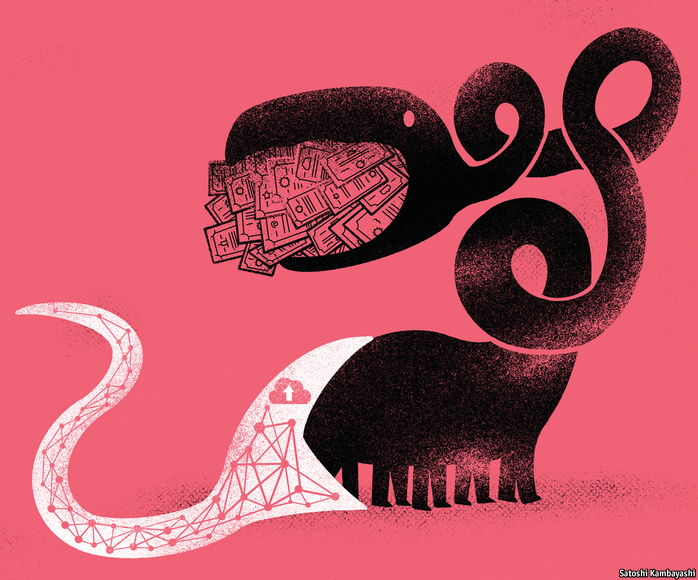
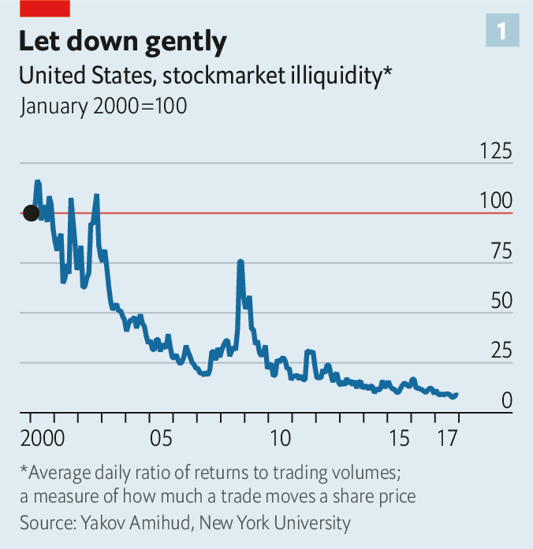
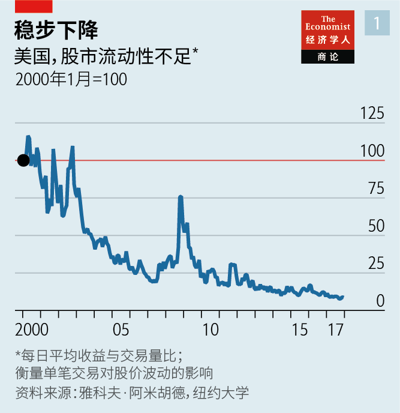
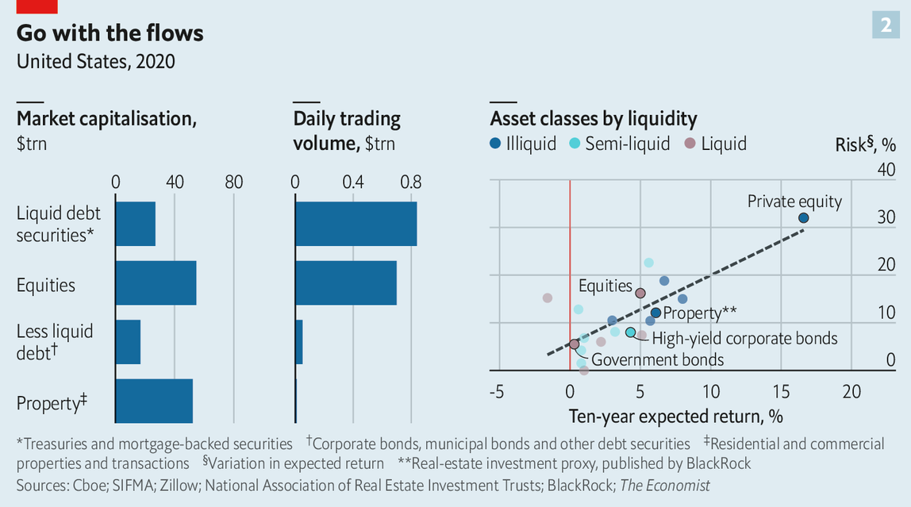
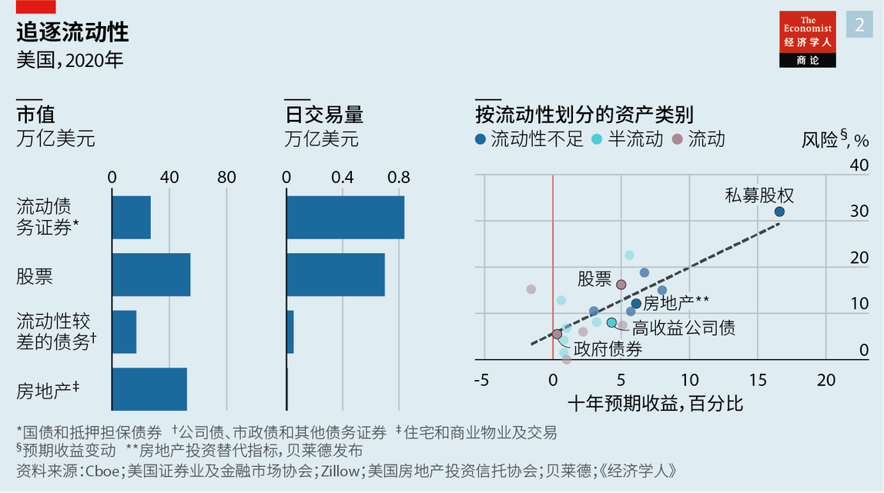

2021-02-22T15:07:54+00:00
Retail investing
散户投资
散戶投資
Transfer of power
权力转移
權力轉移
Stockmarkets may be nearly frictionless, but a new epoch for retail investors is just beginning. Technology is making all kinds of asset markets more liquid
股市可能基本没有摩擦，但是散户的新纪元才刚刚开始。科技正让各种资产市场都更具流动性
股市可能基本沒有摩擦，但是散戶的新紀元才剛剛開始。科技正讓各種資產市場都更具流動性

FOR NEARLY a fortnight, the world was mesmerised by the fortunes of GameStop. Shares in the beleaguered brick-and-mortar purveyor of video games soared from a few dollars in 2020 to above $480 on January 28th, before sinking as low as $81 on February 2nd. A firm that was worth $200m in April last year was briefly valued at $30bn before falling back to Earth. The gyrations, fuelled by an army of day traders that dwells on forums on Reddit, a social-media site, have been chronicled on every front page and ruffled the feathers of regulators and politicians in Washington, DC.
有那么两周，游戏驿站（GameStop）命运的跌宕起伏让全球目瞪口呆。这个陷入危机的电子游戏实体零售商的股价在2020年还只有几美元，在1月28日急剧突破480美元，到2月2日又跌至81美元。去年4月它的市值是2亿美元，此间一度冲到300亿美元，之后又大幅跌落。这过山车般的行情由在社交媒体网站Reddit论坛上聚集的日内交易大军推动，引得媒体纷纷在头版追踪报道，并引发了华盛顿的监管机构和政客的不安。
有那麼兩周，遊戲驛站（GameStop）命運的跌宕起伏讓全球目瞪口呆。這個陷入危機的電子遊戲實體零售商的股價在2020年還只有幾美元，在1月28日急劇突破480美元，到2月2日又跌至81美元。去年4月它的市值是2億美元，此間一度衝到300億美元，之後又大幅跌落。這過山車般的行情由在社交媒體網站Reddit論壇上聚集的日內交易大軍推動，引得媒體紛紛在頭版追蹤報道，並引發了華盛頓的監管機構和政客的不安。
Look beyond the memes and the mania, though, and the story tells you something about the deep structural changes in financial markets. The fact that the fast-paced frenzy was possible is a testament to just how frictionless trading stocks has become, aided by technological advances. Shares can be bought on an app while you queue for a coffee, at a price that is whisker-close to the wholesale price.
不过，除了散户的疯炒和狂热之外，这个故事还揭示出金融市场一些深刻的结构性变化。快节奏的疯炒已然成为可能，这证明了在技术进步的助力下，股票交易已经变得多么畅通无阻。散户排队买咖啡的功夫就可以在应用上以近乎批量交易的价格买入股票。
不過，除了散戶的瘋炒和狂熱之外，這個故事還揭示出金融市場一些深刻的結構性變化。快節奏的瘋炒已然成為可能，這證明了在技術進步的助力下，股票交易已經變得多麼暢通無阻。散戶排隊買咖啡的功夫就可以在應用上以近乎批量交易的價格買入股票。
Progress towards unfettered stockmarket access began in 1975, with the abolition of huge fixed commissions and the entry of discount brokers like Charles Schwab, says Yakov Amihud of New York University. Then came automated trading and the decimalisation of share prices. By the 2010s, high-frequency traders had risen to dominate share trading. “At each stop along the road, the market offloaded some trading costs and liquidity improved,” says Mr Amihud.
纽约大学的雅科夫·阿米胡德（Yakov Amihud）说，股票市场向自由进出发展的进程始于1975年，那时废除了高额固定佣金，嘉信理财（Charles Schwab）这样的折扣经纪商进入市场。后来出现了自动交易和股价报价的十进制转换。2010年代后，高频交易员崛起，主导了股票交易市场。“在这一路上的每个节点，市场都卸掉了一些交易成本，提高了流动性。”阿米胡德说。
紐約大學的雅科夫·阿米胡德（Yakov Amihud）說，股票市場向自由進出發展的進程始於1975年，那時廢除了高額固定傭金，嘉信理財（Charles Schwab）這樣的折扣經紀商進入市場。後來出現了自動交易和股價報價的十進制轉換。2010年代後，高頻交易員崛起，主導了股票交易市場。“在這一路上的每個節點，市場都卸掉了一些交易成本，提高了流動性。”阿米胡德說。
Trading costs tumbled, and the quantity of shares traded ballooned. The more participants piled in, the quicker and cheaper it became to trade, in turn (see chart 1). In 2015 Robinhood, the online broker through which many GameStop trades would flow, was launched, becoming the first platform to charge users no fees at all. That, and the pandemic, which freed up time and provided stimulus cheques as starter funds, have spurred retail participation to new heights. Retail investors made up a tenth of trading volumes in America in 2019. By January this year their share had risen to a quarter.
交易成本大幅下降，股票交易量激增。市场参与者越多，交易速度就越快，成本就越低（见图表1）。2015年，罗宾侠（Robinhood）上线，成为第一家零佣金在线经纪平台，游戏驿站的许多交易就是在这个平台上进行的。有了免费平台，加上疫情让人们有了富余时间，而且还领到了政府刺激经济的救助支票用作启动资金，散户的参与度被推至新高。2019年，散户占美国股票交易量的十分之一；到今年1月，他们的占比已上升到四分之一。
交易成本大幅下降，股票交易量激增。市場參與者越多，交易速度就越快，成本就越低（見圖表1）。2015年，羅賓俠（Robinhood）上線，成為第一家零傭金在線經紀平台，遊戲驛站的許多交易就是在這個平台上進行的。有了免費平台，加上疫情讓人們有了富餘時間，而且還領到了政府刺激經濟的救助支票用作啟動資金，散戶的參與度被推至新高。2019年，散戶佔美國股票交易量的十分之一；到今年1月，他們的佔比已上升到四分之一。
As frictions were sanded down, powerful institutional investors that had padded their bottom lines by charging meaty fees for exposure to stocks saw the assets they control slip away. Now they compete with a range of vastly cheaper offerings: index funds that track the market; exchange-traded funds (ETFs), which offer access to baskets of assets; and robo-advisers, which allocate cash among cheap funds according to portfolio-management theories. Such innovations, possible thanks to advances in computing power and machine learning, have probably saved investors $1trn or more in fees since 1975.
以前，强大的机构投资者可以就股票投资收取丰厚佣金来增加利润，而随着市场摩擦逐渐减小，它们管理的资产规模逐渐减少。现在，它们要跟一系列收费低得多的产品竞争，比如追踪市场的指数基金、管理一揽子资产的交易所交易基金（ETF），还有根据投资组合管理理论在廉价基金之间配置资金的机器人投顾。这些创新得益于计算能力和机器学习技术的进步，自1975年来大概已为投资者节省下不少于一万亿美元的费用。
以前，強大的機構投資者可以就股票投資收取豐厚傭金來增加利潤，而隨着市場摩擦逐漸減小，它們管理的資產規模逐漸減少。現在，它們要跟一系列收費低得多的產品競爭，比如追蹤市場的指數基金、管理一攬子資產的交易所交易基金（ETF），還有根據投資組合管理理論在廉價基金之間配置資金的機器人投顧。這些創新得益於計算能力和機器學習技術的進步，自1975年來大概已為投資者節省下不少於一萬億美元的費用。
Outside stocks, fat fees and thin volumes still gum up markets, resulting in slow-motion transactions and deterring traders. But the same forces that pushed down trading costs and drove up liquidity in the stockmarket are poised to disrupt all manner of assets, from corporate bonds to property, and even Picassos and classic cars. As happened with stocks, this will eventually empower individuals at the expense of established intermediaries.
在股票市场以外，高额收费和低交易量仍然阻碍着市场的发展，导致交易缓慢，让交易者却步。但是，股市中压低交易成本和增加流动性的那些力量势必将颠覆其他各类资产市场：从公司债到不动产，乃至毕加索作品和老爷车。和股市一样，这最终将增强散户的力量，而牺牲传统中介的利益。
在股票市場以外，高額收費和低交易量仍然阻礙着市場的發展，導致交易緩慢，讓交易者卻步。但是，股市中壓低交易成本和增加流動性的那些力量勢必將顛覆其他各類資產市場：從公司債到不動產，乃至畢加索作品和老爺車。和股市一樣，這最終將增強散戶的力量，而犧牲傳統中介的利益。
Wherever you look, technology has helped create new, liquid markets. “The market for knick-knacks in the attic was once illiquid,” says Alvin Roth, a Nobel-prize-winning economist. “The internet made it possible to have your lawn sale on eBay.”GPS and smartphones made ride-sharing apps—which create thick markets for journeys—possible.
无论放眼何处，技术都已经帮助创造出了新的强流动性市场。“以前，在阁楼上卖点小玩意的那种市场是没什么流动性的，”诺贝尔奖得主、经济学家阿尔文·罗斯（Alvin Roth）说，“互联网的出现让你可以把摆在自家草坪上卖的旧货搬上eBay。”GPS和智能手机催生了创造出广阔出行市场的网约车应用。
無論放眼何處，技術都已經幫助創造出了新的強流動性市場。“以前，在閣樓上賣點小玩意的那種市場是沒什麼流動性的，”諾貝爾獎得主、經濟學家阿爾文·羅斯（Alvin Roth）說，“互聯網的出現讓你可以把擺在自家草坪上賣的舊貨搬上eBay。”GPS和智能手機催生了創造出廣闊出行市場的網約車應用。
Examples in financial markets abound. In 19th-century America buyers travelled from farm to farm testing wheat before striking a deal with a single farmer. Then railways made it possible to move grains cheaply in silo cars. But these silos also made it wasteful to store farmers’ grains separately. So in 1848 the Chicago Board of Trade started classifying wheat by quality (1 the best, 5 the worst) and by type (red or white, soft or hard, winter or spring). Standardisation brought down the cost of moving and shopping for grains, making the market more efficient. The process was so effective that the word commodity is now synonymous with standardisation.
金融市场上的例子也比比皆是。在19世纪，在美国收购小麦要逐个走访农场检验小麦，再和其中某个农场主达成交易。后来，铁路的出现使得人们可以用筒仓车厢低成本运输谷物。但用筒仓分别存放农民的谷物也造成了浪费。因此在1848年，芝加哥贸易委员会（Chicago Board of Trade）开始按品质（最好的定为一级，最差的五级）和类型（红皮或白皮、软质或硬质、冬小麦或春小麦）为小麦分类。标准化降低了谷物的运输和购买成本，提高了市场效率。这种做法非常有效，以至于大宗商品这个词现在已经成为标准化的代名词。
金融市場上的例子也比比皆是。在19世紀，在美國收購小麥要逐個走訪農場檢驗小麥，再和其中某個農場主達成交易。後來，鐵路的出現使得人們可以用筒倉車廂低成本運輸穀物。但用筒倉分別存放農民的穀物也造成了浪費。因此在1848年，芝加哥貿易委員會（Chicago Board of Trade）開始按品質（最好的定為一級，最差的五級）和類型（紅皮或白皮、軟質或硬質、冬小麥或春小麥）為小麥分類。標準化降低了穀物的運輸和購買成本，提高了市場效率。這種做法非常有效，以至於大宗商品這個詞現在已經成為標準化的代名詞。
But building a liquid market for an asset is not easy. To see why, compare the markets for bonds and property with equities. They are broadly comparable in size (see chart 2). Yet bonds and buildings change hands in different ways. This is largely the result of fragmentation. There are 4,400 listed firms in America. An investor buying a share in AT&T does not care which one they hold—it is as if they were picking from a set of identical marbles. Now imagine they want to buy an AT&T bond. It is as if a single marble had been smashed into hundreds of pieces, each of them different. There are 224 AT&T bonds alone: each pay different coupons, mature at different times and are worth different amounts. And there are 300,000 distinct corporate bonds in America. Now imagine the investor wants to buy property. All those marble fragments have been ground into sand. Available figures suggest there are 5m-6m commercial buildings and more than 140m dwellings in America, each unique.
但就某项资产建立一个具有流动性的市场并非易事。要了解原因，可以拿债券和房地产市场与股市做比较。它们的规模大致相当（见图表2）。然而，债券和楼房的换手方式不同。这很大程度上是市场碎片化的结果。美国有4400家上市公司。购买AT&T股份的投资者并不在乎他们持有的到底是哪一股，就好像是从一组相同的弹珠中选一个那样。现在再想象他们要购买一只AT&T债券。这就好像一颗弹珠被砸碎成千百块，每块都不一样。仅AT&T债券就有224种，息票各不相同，到期日也各不相同，因此价值全然不等。而在美国有30万种不同的公司债券。再想象一下投资者想要买不动产。那些弹珠碎块又都被磨成了碎粒。现有数据显示，美国有500万至600万栋商业建筑，超过1.4亿套住宅，每栋每套都各不相同。
但就某項資產建立一個具有流動性的市場並非易事。要了解原因，可以拿債券和房地產市場與股市做比較。它們的規模大致相當（見圖表2）。然而，債券和樓房的換手方式不同。這很大程度上是市場碎片化的結果。美國有4400家上市公司。購買AT&T股份的投資者並不在乎他們持有的到底是哪一股，就好像是從一組相同的彈珠中選一個那樣。現在再想象他們要購買一隻AT&T債券。這就好像一顆彈珠被砸碎成千百塊，每塊都不一樣。僅AT&T債券就有224種，息票各不相同，到期日也各不相同，因此價值全然不等。而在美國有30萬種不同的公司債券。再想象一下投資者想要買不動產。那些彈珠碎塊又都被磨成了碎粒。現有數據顯示，美國有500萬至600萬棟商業建築，超過1.4億套住宅，每棟每套都各不相同。
Fragmentation chills trading activity. The market for stocks is bustling. AT&T shares change hands 40m times a day (though some investors will hold for years, and high-frequency traders might hold for less than a second). Small-cap stocks—recent action in GameStop aside—tend to trade less frequently.
碎片化的市场会让交易低迷。股市却非常繁荣。AT&T的股票每天换手4000万次（尽管有些投资者会长年持有，而高频交易者持有的时间可能一秒都不到）。小盘股（不算上最近游戏驿站股票的交易）一般换手率较低。
碎片化的市場會讓交易低迷。股市卻非常繁榮。AT&T的股票每天換手4000萬次（儘管有些投資者會長年持有，而高頻交易者持有的時間可能一秒都不到）。小盤股（不算上最近遊戲驛站股票的交易）一般換手率較低。
Bonds are stickier and dearer to trade. Even the most liquid of AT&T’s bonds only trades a few hundred times a day. “Some bonds are like museum pieces: they get put away in insurance companies’ portfolios, never to trade again,” says Richard Schiffman of MarketAxess, a trading platform.
债券的交易更不频繁，交易成本更高。就算是AT&T流动性最强的债券一天也不过交易几百次。“有些债券就像博物馆里的展品，被保险公司配置到自己的投资组合中之后就再也不会交易了。”交易平台MarketAxess的理查德·希夫曼（Richard Schiffman）说。
債券的交易更不頻繁，交易成本更高。就算是AT&T流動性最強的債券一天也不過交易幾百次。“有些債券就像博物館裡的展品，被保險公司配置到自己的投資組合中之後就再也不會交易了。”交易平台MarketAxess的理查德·希夫曼（Richard Schiffman）說。
At the stickiest end is property. A slice of real-estate investment is offered to the masses, via listed trusts. But the big investments, managed by private-equity firms, are open only to institutions like pension funds or wealthy individuals. Houses, too, turn over slowly. Buyers and sellers must be painstakingly matched. Sellers in America pay a meaty 5-6% commission. Just 5% of homes change hands a year.
换手率最低的是不动产。只有小部分不动产的投资会通过公开的信托产品提供给普通投资者。大部分投资由私募股权公司管理，只向养老基金等机构投资者和高净值个人客户开放。房屋的转手率也很低。买卖双方必须慢慢耐心匹配。美国的卖家要支付高达5%至6％的佣金。每年只有5％的房屋转手。
換手率最低的是不動產。只有小部分不動產的投資會通過公開的信託產品提供給普通投資者。大部分投資由私募股權公司管理，只向養老基金等機構投資者和高凈值個人客戶開放。房屋的轉手率也很低。買賣雙方必須慢慢耐心匹配。美國的賣家要支付高達5%至6％的傭金。每年只有5％的房屋轉手。
Low transaction volumes make it difficult to price assets. The price of a share in AT&T can be arrived at instantly. Some bonds, like recently issued Treasuries, are easy to price too. Older issuances are trickier. Traders either attempt to match a seller with a buyer, or look at recent transactions in similar bonds as a guide. Pricing property is a similar, but more glacial, process.
交易量低，资产定价就难。AT&T的每股价格可以瞬间确定。一些债券也很容易定价，比如新发行的美国国债。以前发行的老券定价就困难些。债券交易员要么努力撮合买卖双方，要么以同类债券近期的交易价格作为参照。给房地产定价是类似的过程，但还要更慢。
交易量低，資產定價就難。AT&T的每股價格可以瞬間確定。一些債券也很容易定價，比如新發行的美國國債。以前發行的老券定價就困難些。債券交易員要麼努力撮合買賣雙方，要麼以同類債券近期的交易價格作為參照。給房地產定價是類似的過程，但還要更慢。
Fragmentation long seemed a hurdle to making the bond market as rapid-fire as the stockmarket. An institutional investor wanting to buy a bond would talk to two or three big banks or brokers that dominate the market. But this is starting to change thanks, in large part, to open-ended fixed-income ETFs, funds that hold diversified baskets of bonds. These enhance price discovery and trading volumes in two ways.
市场碎片化似乎一直阻碍了债券市场像股市那样快速交易。想要购买债券的机构投资者会向市场上主导的两三家大型银行或经纪公司询价。但这种情况已经开始改变，很大程度上是因为有了开放式固定收益ETF，即持有一篮子多元化债券的基金。这些基金以两种方式增强价格发现能力并提升交易量。
市場碎片化似乎一直阻礙了債券市場像股市那樣快速交易。想要購買債券的機構投資者會向市場上主導的兩三家大型銀行或經紀公司詢價。但這種情況已經開始改變，很大程度上是因為有了開放式固定收益ETF，即持有一籃子多元化債券的基金。這些基金以兩種方式增強價格發現能力並提升交易量。
All the world’s a market
整个世界是市场
整個世界是市場
The first is through their design. Some of the fixed-income ETFs offered by BlackRock, an asset manager, have 8,000 or more different bonds in them. As demand for an ETF rises, it begins to trade above the fair value of its component bonds (ie, at a premium). “When one of our ETFs trades at a premium we expect to see creation activity,” says Samara Cohen of BlackRock. The firm works with a handful of marketmakers, which have an incentive to expand the size of the ETF when it trades at a premium. Jane Street Capital, one such marketmaker, might offer BlackRock a portfolio of 400 bonds to add to its ETF, pushing the price back towards fair value. Jane Street gets to keep the difference—it bought those 400 bonds at market price, and sells them at the implied premium at which the ETF was trading. When the ETF gets cheaper, the reverse occurs. Jane Street redeems units of the ETF for its component bonds at a discount and sells them for market prices (again, pocketing the spread). All this activity, which is increasingly automatic, enhances price discovery.
首先是基金的设计。资产管理公司贝莱德（BlackRock）提供的一些固定收益ETF中有8000或更多只债券。随着对一只ETF买入需求的增长，它开始以高于其成分债券公允价值的价格（即溢价）进行交易。“当我们的一只ETF溢价交易时，可以想见会出现一些创设活动。”贝莱德的萨玛拉·科恩（Samara Cohen）表示。该公司与几家做市商合作，当一只ETF溢价交易时，这些做市商会很有动力扩大它的规模。其中的一家做市商简街资本（Jane Street Capital）可能会向贝莱德提供一个由400只债券构成的投资组合，加入到现存的ETF中，让价格回归公允价值。它以市场价买入这400只债券，然后以ETF交易时的隐含溢价卖出该债券组合，赚取两者的价差。当ETF价格下跌时，情况则相反。简街赎回ETF单位，也就是以折价买入其成分债券，并以市场价卖出（同样赚取价差）。这些越来越自动化的交易增强了价格发现能力。
首先是基金的設計。資產管理公司貝萊德（BlackRock）提供的一些固定收益ETF中有8000或更多隻債券。隨着對一隻ETF買入需求的增長，它開始以高於其成分債券公允價值的價格（即溢價）進行交易。“當我們的一隻ETF溢價交易時，可以想見會出現一些創設活動。”貝萊德的薩瑪拉·科恩（Samara Cohen）表示。該公司與幾家做市商合作，當一隻ETF溢價交易時，這些做市商會很有動力擴大它的規模。其中的一家做市商簡街資本（Jane Street Capital）可能會向貝萊德提供一個由400隻債券構成的投資組合，加入到現存的ETF中，讓價格回歸公允價值。它以市場價買入這400隻債券，然後以ETF交易時的隱含溢價賣出該債券組合，賺取兩者的價差。當ETF價格下跌時，情況則相反。簡街贖回ETF單位，也就是以折價買入其成分債券，並以市場價賣出（同樣賺取價差）。這些越來越自動化的交易增強了價格發現能力。
The second effect is through the wider trading of an ETF. Each time it trades, a reference for its component parts is created, which helps price other bonds. And ETFs trade far more frequently than their components. In March 2020, as volatility shook markets, BlackRock’s biggest investment-grade corporate-bond ETF traded 90,000 times a day. The top five holdings of the fund traded just 37 times. Price accuracy means lower trading costs—a step towards frictionless markets.
第二种影响是通过ETF交易的扩大实现的。每笔ETF的交易都会为其中的成分债券创建一个新的参考价格，这同时也有助于其他债券的定价。而ETF的交易频率远高于其成分债券。2020年3月，市场大幅波动，贝莱德最大的投资级公司债券ETF每天交易九万次。而该ETF持有的前五大债券仅交易了37次。价格准确意味着交易成本更低，这就向无摩擦市场迈进了一步。
第二種影響是通過ETF交易的擴大實現的。每筆ETF的交易都會為其中的成分債券創建一個新的參考價格，這同時也有助於其他債券的定價。而ETF的交易頻率遠高於其成分債券。2020年3月，市場大幅波動，貝萊德最大的投資級公司債券ETF每天交易九萬次。而該ETF持有的前五大債券僅交易了37次。價格準確意味着交易成本更低，這就向無摩擦市場邁進了一步。
Trading technology is also improving. MarketAxess was set up to make it easier for investors to contact all the big banks’ bond desks and brokerage firms—around 20 firms in total—at once. But the platform has since introduced open trading, which functions almost like an exchange, letting all participants interact with each other. The result is that trading need not be solely dependent on banks for liquidity, says Mr Schiffman. Around a third of the transactions MarketAxess facilitates on its platform are such “all-to-all” transactions.
交易技术也在进步。MarketAxess创立的初衷就是为了让投资者可以更轻松地同时与所有大型银行的债券交易台和经纪公司（总共约20家）联系。但此平台后来引入了开放交易，功能几乎相当于一个交易所，所有参与者都可以相互交流。结果是交易不必只依赖银行来获得流动性，希夫曼说。MarketAxess在其平台上促成的交易中约有三分之一是此类“多对多”交易。
交易技術也在進步。MarketAxess創立的初衷就是為了讓投資者可以更輕鬆地同時與所有大型銀行的債券交易台和經紀公司（總共約20家）聯繫。但此平台後來引入了開放交易，功能幾乎相當於一個交易所，所有參與者都可以相互交流。結果是交易不必只依賴銀行來獲得流動性，希夫曼說。MarketAxess在其平台上促成的交易中約有三分之一是此類“多對多”交易。
The next phase might be automating bond trading. Overbond, a fixed-income analytics firm, consolidates trading data that it plugs into a machine-learning algorithm. The algorithm finds recent transactions in similar bonds and spits out implied prices. It was the arrival of fast serverless cloud computing that helped the algorithm mimic a human trader in real time, says Vuk Magdelinic of Overbond.
下一阶段可能会将债券交易自动化。固定收益分析公司Overbond整合了交易数据，将其输入一个机器学习算法中。算法查找到相似债券最近的交易，并给出隐含的价格。快速无服务器云计算的出现帮助该算法实时模拟人类交易员的交易，Overbond的伍克·麦哲里尼（Vuk Magdelinic）说。
下一階段可能會將債券交易自動化。固定收益分析公司Overbond整合了交易數據，將其輸入一個機器學習算法中。算法查找到相似債券最近的交易，並給出隱含的價格。快速無服務器雲計算的出現幫助該算法實時模擬人類交易員的交易，Overbond的伍克·麥哲里尼（Vuk Magdelinic）說。
In less liquid assets, like private equity and property, the seeds of change have just been planted. To smaller investors, illiquidity can be a curse: nervous regulators try to restrict access to illiquid assets. But for institutions, it is a boon. Private-equity pitch books chatter about the “illiquidity premium” their investments earn. The result is that private markets hold appeal for certain types of investors that are willing and able to lock their money up, but not others. A quarter of university endowments and a sixth of sovereign-wealth funds’ capital are invested in them. By contrast, insurers and retail investors plough just 1% of their capital into private markets.
在私募股权和房地产等流动性较差的资产中，变革的种子刚刚种下。对较小的投资者而言，流动性不足可能是一个诅咒：紧张的监管者会试图限制低流动性资产市场的准入。但对于机构投资者来说，流动性不足是一个福利。私募股权公司在投资推介材料里大谈特谈它们的投资所获得的“非流动性溢价”。结果私募市场吸引了某些愿意并能够锁定其资金的投资者，而让其他投资者却步。大学捐赠基金和主权财富基金分别把四分之一和六分之一的资本投给了私募。相比之下，保险公司和散户投资者只投入了1%的资本。
在私募股權和房地產等流動性較差的資產中，變革的種子剛剛種下。對較小的投資者而言，流動性不足可能是一個詛咒：緊張的監管者會試圖限制低流動性資產市場的准入。但對於機構投資者來說，流動性不足是一個福利。私募股權公司在投資推介材料里大談特談它們的投資所獲得的“非流動性溢價”。結果私募市場吸引了某些願意並能夠鎖定其資金的投資者，而讓其他投資者卻步。大學捐贈基金和主權財富基金分別把四分之一和六分之一的資本投給了私募。相比之下，保險公司和散戶投資者只投入了1%的資本。
And all the men and women traders
男男女女都是交易员
男男女女都是交易員
This too could eventually change. For one, firms in private markets are beginning to create funds that can expand or shrink as they gain or lose clients, an innovation that echoes that of bond ETFs. Investors typically buy into private markets when a fund manager raises capital. The capital is locked up for a decade or more, and used to buy 20 or so companies or real-estate investments over several years. But in January Hamilton Lane, an asset manager, launched a private-equity and private-credit fund that circumvents this dynamic by ditching the fundraising cycle.
这最终可能也会改变。一方面，私募股权公司正开始创建一些基金，可视客户的新增或流失情况扩大或收缩规模，这一创新与债券ETF的创新相近。通常情况下，投资者在基金经理募集资金期间买入私募产品，资金会被锁定十年或更久，基金经理会在几年内购买大概20家公司的股份或投资房地产。但是在1月，资产管理公司汉领资本（Hamilton Lane）成立了一个私募股权加私有信贷基金，跳过了募集期，改变了这种情况。
這最終可能也會改變。一方面，私募股權公司正開始創建一些基金，可視客戶的新增或流失情況擴大或收縮規模，這一創新與債券ETF的創新相近。通常情況下，投資者在基金經理募集資金期間買入私募產品，資金會被鎖定十年或更久，基金經理會在幾年內購買大概20家公司的股份或投資房地產。但是在1月，資產管理公司漢領資本（Hamilton Lane）成立了一個私募股權加私有信貸基金，跳過了募集期，改變了這種情況。
“When a [private-equity] fund manager buys a company for their fund they may ask us to partner with them for the equity for the project,” says Drew Schardt of Hamilton Lane. This is a cheaper way of getting access, he notes: direct or co-investment deals do not have any underlying fees attached to them. These deals come along fairly regularly, allowing the fund to grow with demand. It can also shrink: the fund is structured so that its investments mature regularly. They should do so at a rate of 20% a year, fulfilling the limited redemptions the firm plans to offer. It also plans to match those keen to exit the fund with others buying in, using third-party valuations.
“当（私募股权）基金经理为自己的基金买入一家公司时，可能会邀请我们合作参股相关项目。”汉领资本的德鲁·沙特（Drew Schardt）说。他指出，这是一种更便宜的投资途径，因为直接或共同投资的项目不附带任何隐含费用。此类交易经常出现，让基金可以随着需求而扩大。当然也可以缩小：根据该基金的结构，不同期限的投资会相继到期。每年可以有20％的投资到期，这样基金就可以满足计划中会提供的限制性赎回的需求。它还计划使用第三方估值，来匹配急于退出的投资者和想要买进的投资者。
“當（私募股權）基金經理為自己的基金買入一家公司時，可能會邀請我們合作參股相關項目。”漢領資本的德魯·沙特（Drew Schardt）說。他指出，這是一種更便宜的投資途徑，因為直接或共同投資的項目不附帶任何隱含費用。此類交易經常出現，讓基金可以隨着需求而擴大。當然也可以縮小：根據該基金的結構，不同期限的投資會相繼到期。每年可以有20％的投資到期，這樣基金就可以滿足計劃中會提供的限制性贖回的需求。它還計劃使用第三方估值，來匹配急於退出的投資者和想要買進的投資者。
Other startups want to go even further. Regulation is helping them. Only accredited investors can invest in property, venture-capital funds or hedge funds. “Accredited” once meant the rich, those earning more than $200,000, or worth more than $1m. But a rule change in 2017 means that those with professional experience or knowledge are now eligible too.
其他创业公司还想走得更远。监管正在助它们一臂之力。只有合格的投资者才能投资房地产、风投基金或对冲基金。“合格”一词曾指年收入超过20万美元或净资产超过100万美元的富人。但2017年一项监管规定做了修改，现在具有专业经验或知识的人也算合格。
其他創業公司還想走得更遠。監管正在助它們一臂之力。只有合格的投資者才能投資房地產、風投基金或對沖基金。“合格”一詞曾指年收入超過20萬美元或凈資產超過100萬美元的富人。但2017年一項監管規定做了修改，現在具有專業經驗或知識的人也算合格。
This change has fuelled the growth of startups offering property investments to the masses. One such firm is Cadre, set up in 2014. Ryan Williams, its co-founder, who previously worked at Blackstone, an alternative asset-manager, wants to build an exchange for commercial property that allows people to trade stakes in buildings, almost like a “digital stockmarket”.
这一变化推动了向大众提供房地产投资的创业公司扩增。成立于2014年的Cadre就是其一。它的联合创始人瑞恩·威廉姆斯（Ryan Williams）曾在另类资产管理公司黑石集团（Blackstone）工作，他想建立一个商业地产交易所，让人们可以交易楼房股权，差不多就像一个“数字证券市场”。
這一變化推動了向大眾提供房地產投資的創業公司擴增。成立於2014年的Cadre就是其一。它的聯合創始人瑞恩·威廉姆斯（Ryan Williams）曾在另類資產管理公司黑石集團（Blackstone）工作，他想建立一個商業地產交易所，讓人們可以交易樓房股權，差不多就像一個“數字證券市場”。
Cadre finds an investment opportunity with a life of around five or seven years and lists it on its platform. Investors can buy pieces of it through the site. Every quarter, rental income is paid out and investors can choose to cash out through a trading system. “We provide a quarterly valuation for their investment, and they can choose to sell all or some of their stake at a range of prices,” says Mr Williams. This secondary market typically clears quickly.
该公司找到一个期限约五到七年的投资机会，并将它挂在自己的平台上。投资者可以通过网站购买部分股权。每季度投资者都会收到租金收入，也可以选择通过一个交易系统变现。“我们按季度为他们的投资估值，他们可以选择在一个价格区间内卖出其全部或部分股权。”威廉姆斯说。这个二级市场通常很快就能清算。
該公司找到一個期限約五到七年的投資機會，並將它掛在自己的平台上。投資者可以通過網站購買部分股權。每季度投資者都會收到租金收入，也可以選擇通過一個交易系統變現。“我們按季度為他們的投資估值，他們可以選擇在一個價格區間內賣出其全部或部分股權。”威廉姆斯說。這個二級市場通常很快就能清算。
Low fees are likely to be part of the draw. Cadre charges a 1% fee on any cash deposited on the platform and an annual management fee of 1.5%. This is just a quarter of what an investor might pay a traditional alternative-asset manager. The firm’s clients include the establishment: Goldman Sachs, a bank, is spending $250m on behalf of its wealth-management clients. But individuals are stepping in, too.
较低的费用很可能会是该平台的吸引力之一。Cadre对平台上存入的现金一律收取1％的佣金和1.5％的年管理费。这只是投资者可能向传统另类资产管理公司支付费用的四分之一。Cadre的客户包括传统大机构，比如高盛就为其理财客户投资了2.5亿美元。但个人客户也在加入。
較低的費用很可能會是該平台的吸引力之一。Cadre對平台上存入的現金一律收取1％的傭金和1.5％的年管理費。這只是投資者可能向傳統另類資產管理公司支付費用的四分之一。Cadre的客戶包括傳統大機構，比如高盛就為其理財客戶投資了2.5億美元。但個人客戶也在加入。
Yieldstreet, which was founded in 2015, offers property investments as well as those in snazzier alternatives like art, marine finance (such as the funding of container ships) and private credit. In 2015 the Securities and Exchange Commission changed its rules on “mini” initial public offerings (IPOs), increasing the amount that can be raised to $50m. A clutch of firms have since listed artworks and classic cars.
创立于2015年的Yieldstreet提供房地产投资以及各类时髦的另类投资项目，如艺术品、海运融资（例如集装箱船融资）和私人信贷等。2015年，美国证券交易委员会（SEC）更改了有关“迷你”IPO的规定，将融资上限提高至5000万美元。此后，许多公司都将艺术品和老爷车作为投资对象。
創立於2015年的Yieldstreet提供房地產投資以及各類時髦的另類投資項目，如藝術品、海運融資（例如集裝箱船融資）和私人信貸等。2015年，美國證券交易委員會（SEC）更改了有關“迷你”IPO的規定，將融資上限提高至5000萬美元。此後，許多公司都將藝術品和老爺車作為投資對象。
Even in residential property, the most sluggish and expensive market of all, firms are using technology to improve efficiency. “When we thought about what makes a properly functioning marketplace, it all came down to price discovery and data,” says Rich Barton, the founder of Zillow, an “i-buying” firm, which acts like a marketmaker for houses. After a decade gathering data on every home in America, it can now plug a property’s characteristics into machine-learning algorithms to price them, just as Mr Magdelinic plugs in characteristics of bonds. Zillow buys homes based on the algorithm’s assessment, taking them onto its balance-sheet. It then sells these on its platform.
即使是在流动性最低和交易费用最高的住宅市场中，企业也在利用技术提高效率。“我们曾思考是哪些因素让市场正常运转，最终发现一切都取决于价格发现和数据。”“房屋直接买卖”公司Zillow的创始人里奇·巴顿（Rich Barton）说。他的公司就好像一个房屋交易的做市商。这家公司在过去十年里收集了美国每套房屋的特征数据，现在可以将这些数据输入机器学习算法中来给房屋定价，就像麦哲里尼输入债券数据一样。Zillow根据算法的估值来购入房屋，将它们计入自己的资产负债表，然后在自己的平台上出售这些房屋。
即使是在流動性最低和交易費用最高的住宅市場中，企業也在利用技術提高效率。“我們曾思考是哪些因素讓市場正常運轉，最終發現一切都取決於價格發現和數據。”“房屋直接買賣”公司Zillow的創始人里奇·巴頓（Rich Barton）說。他的公司就好像一個房屋交易的做市商。這家公司在過去十年里收集了美國每套房屋的特徵數據，現在可以將這些數據輸入機器學習算法中來給房屋定價，就像麥哲里尼輸入債券數據一樣。Zillow根據算法的估值來購入房屋，將它們計入自己的資產負債表，然後在自己的平台上出售這些房屋。
There is evidence this is pushing down agents’ fees. Commissions are dropping quickly in areas in which i-buyers operate. A study by Mike DelPrete of the University of Colorado suggests that the fees i-buyers pay to buyers’ agents are falling. In places such as Phoenix, Dallas, and Raleigh the fees paid to agents have dropped by around 0.5-1 percentage points in a little over a year. In Atlanta they have fallen by half in just two years.
有证据表明这降低了中介费用。在“房屋直接买卖”公司运营的地区，佣金在迅速下降。科罗拉多大学的迈克·德尔普雷特（Mike DelPrete）的一项研究显示，“房屋直接买卖”公司付给买家中介的佣金正在下降。在凤凰城、达拉斯和罗利等地，付给中介的佣金在一年多一点的时间内下降了约0.5至1个百分点。在亚特兰大，佣金在短短两年内下降了一半。
有證據表明這降低了中介費用。在“房屋直接買賣”公司運營的地區，傭金在迅速下降。科羅拉多大學的邁克·德爾普雷特（Mike DelPrete）的一項研究顯示，“房屋直接買賣”公司付給買家中介的傭金正在下降。在鳳凰城、達拉斯和羅利等地，付給中介的傭金在一年多一點的時間內下降了約0.5至1個百分點。在亞特蘭大，傭金在短短兩年內下降了一半。
Bring these developments across disparate markets together, and it seems clear that technology is making it possible for liquidity, price transparency and competition to crop up in a variety of financial markets. True, the markets for art, bonds and houses will never be quite as frictionless as the stockmarket. Mr Schiffman thinks Tesla’s bonds are unlikely to be as exciting as its shares. The clue is in the name. “It is fixed income!” he laughs. No one will make a snap decision to buy or sell a house—because they have to live in it.
纵观不同市场上的这些发展，有一点看来很明显，就是技术正使得流动性、价格透明和竞争出现在各种金融市场中。的确，艺术品、债券和房屋的市场永远不会像股市那样没有摩擦。希夫曼认为特斯拉的债券不太会像它的股票那样令人兴奋。线索就在名字里面。“债券是固定收益投资！”他笑着说。没有人会瞬间做出买卖房屋的决定，因为他们要住在屋子里。
縱觀不同市場上的這些發展，有一點看來很明顯，就是技術正使得流動性、價格透明和競爭出現在各種金融市場中。的確，藝術品、債券和房屋的市場永遠不會像股市那樣沒有摩擦。希夫曼認為特斯拉的債券不太會像它的股票那樣令人興奮。線索就在名字裡面。“債券是固定收益投資！”他笑着說。沒有人會瞬間做出買賣房屋的決定，因為他們要住在屋子裡。
They have their exits and entrances
进场有时，退场有时
進場有時，退場有時
Yet the oncoming rush of liquidity should worry institutional investors. Many help their customers gain exposure to a basket of small companies, or to commercial property. But that often comes as part of a pricey package deal: clients must also buy the slick advice that comes with it. Once it became possible to buy exposure alone in the stockmarket, many of them ditched their stock-pickers.
然而，即将涌来的流动性应该会让机构投资者担忧。很多机构帮助客户投资一篮子小公司或商业地产。但这通常是一整套昂贵交易的一部分，客户还必须购买配套的花言巧语的咨询服务。一旦客户有机会自己在股市里购买这些股票，他们中的许多人就把投资机构踢开了。
然而，即將湧來的流動性應該會讓機構投資者擔憂。很多機構幫助客戶投資一籃子小公司或商業地產。但這通常是一整套昂貴交易的一部分，客戶還必須購買配套的花言巧語的諮詢服務。一旦客戶有機會自己在股市裡購買這些股票，他們中的許多人就把投資機構踢開了。
Now price transparency and liquidity seem bound to deliver fierce fee competition in other asset markets. Retail investors may one day be able to stuff their cash into a portfolio of low-fee funds in everything from stocks and bonds to art and property. It is this, rather than gyrations in GameStop stock, that will give retail investors more power over Wall Street. ■
现在，价格透明和流动性似乎必将在其他资产市场引发激烈的价格战。散户投资者也许有一天可以将其资金投到低收费基金的投资组合上，从股票、债券到艺术品和房地产，应有尽有。正是这一点——而不是游戏驿站股票的剧烈波动——将让散户的影响力压过华尔街。
現在，價格透明和流動性似乎必將在其他資產市場引發激烈的價格戰。散戶投資者也許有一天可以將其資金投到低收費基金的投資組合上，從股票、債券到藝術品和房地產，應有盡有。正是這一點——而不是遊戲驛站股票的劇烈波動——將讓散戶的影響力壓過華爾街。